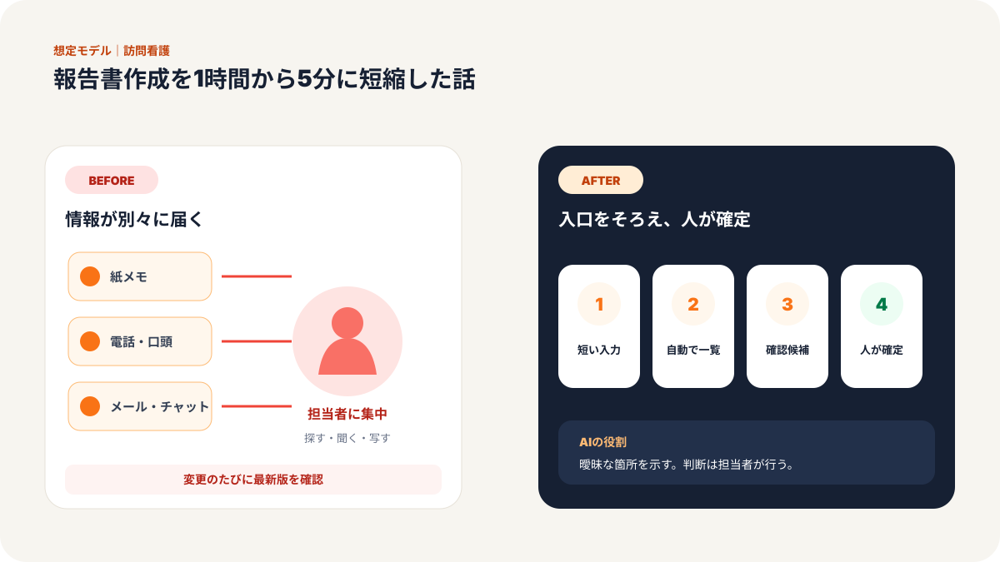
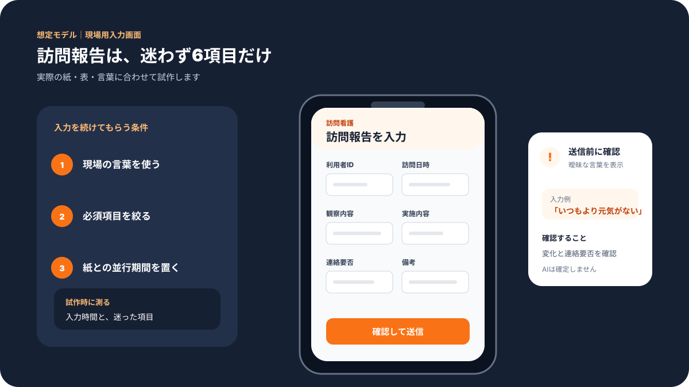
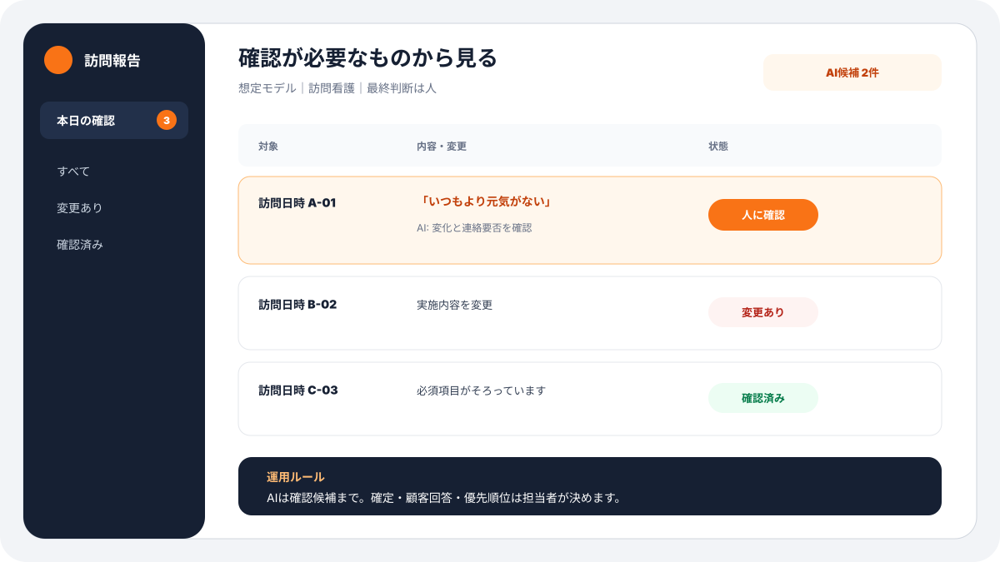
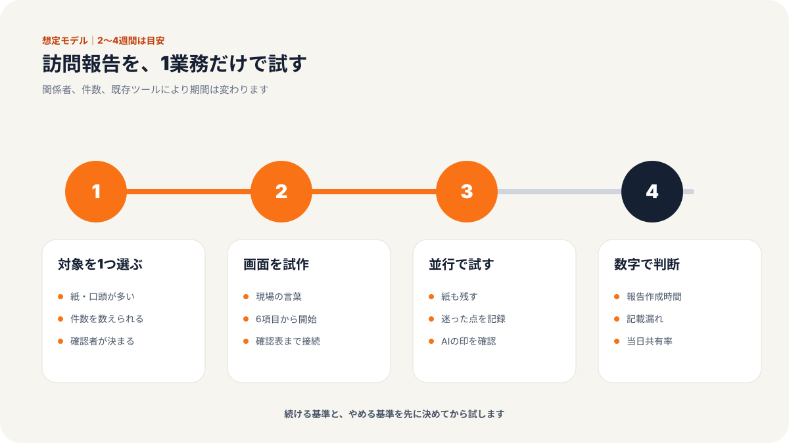
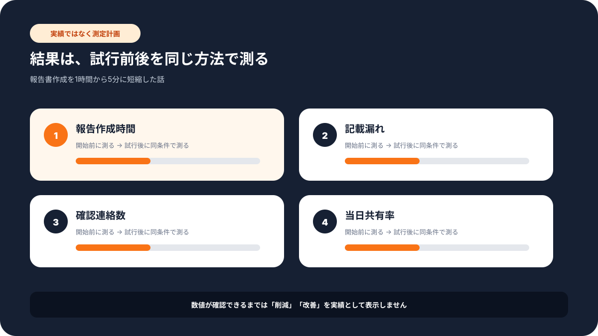

現場での使い方
この記事で変わる業務の流れ
「誰が入力し、誰が確認するか」までイメージできるよう、想定画面と導入手順をまとめています。





# 従業員26名の訪問看護ステーション／報告書作成を1時間から5分に短縮した話
> 医療・福祉業 × 看護師・事務担当 × 従業員26名規模の事例
訪問看護ステーションでは、利用者さんの状態を正確に記録し、主治医やケアマネジャーに共有することが欠かせません。
ただ、現場ではこの記録業務が大きな負担になります。
訪問から戻ってきた看護師さんが、疲れた状態で報告書を書く。別の担当者が郵送物を準備する。管理者が内容を確認する。必要があれば、また看護師さんに聞き直す。
一つひとつは大切な仕事です。
しかし、紙、口頭、個人メモに分かれていると、どうしても時間がかかります。
今回の事例では、訪問看護ステーションで生成AIを活用した社内用のポータルを作り、報告書作成を1時間から5分へ、郵送手配を2時間から3分へ短縮した公開事例を参考にしています。離職率も83.3%から7.7%へ改善したとされており、単なる時短ではなく、働き続けやすさに影響した点が重要です。
弊社が同じようなご相談を受けた場合も、いきなり大きなシステムを作るのではなく、まず「毎日書いているもの」「毎回確認しているもの」「誰かに聞かないと分からないもの」を整理するところから始めます。
課題：報告書を書くために、現場の記憶を毎回掘り起こしていた
訪問看護の現場でよくあるのが、記録の材料が分散している状態です。
訪問先で気づいたことは手元のメモに残る。利用者さんの小さな変化は看護師さんの記憶に残る。連絡事項はチャットや口頭で共有される。過去の記録は別の場所にある。
報告書を書くときには、それらを思い出しながら一つの文章にまとめる必要があります。
現場の方からは、次のような声が出やすいです。
「訪問そのものより、戻ってからの記録が重いんです」
「書く内容は分かっているのに、文章にするのに時間がかかります」
「確認のために、同じことを何度も聞かれるのがつらいです」
この状態では、看護師さんの専門性が記録作業に吸われます。
さらに、報告書や郵送物の準備が遅れると、管理者や事務担当者の確認も後ろ倒しになります。月末にまとめて処理する形になると、残業や持ち帰り仕事につながりかねません。
施策：記録を集める場所と、文章を下書きする流れを作った
重要なのは、AIに報告書を丸投げすることではありません。
医療・介護領域では、最終確認は必ず人間が行うべきです。AIは判断者ではなく、記録を整理し、下書きを作る補助役に置きます。
弊社で支援するなら、次の3ステップで設計します。
ステップ1: 訪問後に入力する画面をそろえる
まず、訪問後に記録する項目を決めます。
利用者名、訪問日時、バイタル、服薬状況、食事、睡眠、気になった変化、家族への連絡事項、次回確認すること。
これらを、看護師さんがスマートフォンやパソコンから入力できる画面にします。
専門的な言葉で言えばフォームやデータベースですが、現場向けには「入力する画面」と考えた方が分かりやすいです。
紙のメモをなくすことが目的ではありません。
まずは、あとで報告書に使う材料を同じ場所に集めることが目的です。
ステップ2: 過去記録と今回メモを見ながら、AIが下書きを作る
次に、入力された内容と過去の記録をもとに、AIが報告書の下書きを作ります。
ここで大切なのは、AIに自由作文をさせないことです。
「体調の変化」「対応内容」「次回の確認事項」など、見出しを固定します。書いてはいけない表現や、必ず人間が確認する項目も決めます。
AIへの指示文も、毎回その場で作るのではなく、施設内で統一します。
これにより、担当者ごとの文章のばらつきを減らせます。
ステップ3: 管理者確認と郵送準備まで同じ流れにする
報告書の下書きができたら、看護師さんが確認し、管理者が承認します。
承認後、事務担当者が郵送や共有の準備に進みます。
ここまでを同じ画面上で確認できるようにすると、「今どこで止まっているか」が分かります。
事務担当者から見ても、「誰に確認すればよいか」が明確になります。
成果：報告書作成と郵送手配の時間が大きく減った
公開事例では、報告書作成が1時間から5分へ、郵送手配が2時間から3分へ短縮されています。
同じ比率がすべての事業所で出るわけではありませんが、記録材料が散らばっている職場ほど、大きな改善が期待できます。
| 項目 | Before | After |
|------|--------|-------|
| 報告書作成 | 1件あたり約60分 | 1件あたり約5分 |
| 郵送手配 | 約2時間 | 約3分 |
| 記録の探し方 | 紙、口頭、個人メモを確認 | 入力画面と履歴から確認 |
| 管理者確認 | 誰の確認待ちか分かりにくい | 承認状況が見える |
| 離職率 | 83.3% | 7.7% |
数字以上に大きいのは、心理的な負担です。
「報告書が残っているから帰れない」
この状態が続くと、現場の疲労感は大きくなります。
入力、下書き、確認、郵送準備の流れが整うと、看護師さんは利用者さんへの対応に集中しやすくなります。
なぜ効果が出たのか
理由は、AIを単独で入れたからではありません。
記録する場所、下書きの型、確認する人、次の作業までの流れをまとめて整えたからです。
AIだけを入れても、元の情報が紙や口頭のままでは効果が出にくいです。
逆に、入力項目と確認ルールが整っていれば、AIはかなり役立ちます。
訪問看護のように、文章化の負担が大きく、かつ人間確認が必須の業務では、AIは「判断する人」ではなく「下書きと整理の担当」として置くのが現実的です。
他の業種にも応用できる
この考え方は、訪問看護だけではありません。
介護施設の日報、整骨院の施術メモ、保育園の連絡帳、士業事務所の報告書、営業担当の訪問記録にも応用できます。
共通しているのは、現場の記憶を文章にする負担です。
現場の人が毎回ゼロから文章を書くのではなく、入力する画面に材料をため、AIが下書きを作り、人間が確認する。
この流れを作るだけで、記録業務はかなり変わります。
導入前に確認しておきたいこと
訪問看護のように重要な記録を扱う業務では、AIを入れる前に確認しておくべき点があります。
一つ目は、どの情報をAIに読ませてよいかです。利用者さんの情報には慎重な取り扱いが必要です。氏名、住所、病名、家族構成など、必要以上の情報をAIに渡さない設計が欠かせません。社内で使う場合でも、入力する項目と閲覧できる人を分けておく必要があります。
二つ目は、最終確認者です。AIが作った下書きは便利ですが、医療・介護の判断をAIだけで確定してはいけません。看護師さん本人、管理者、事務担当者のどこで確認するかを決めておくと、運用後の不安が減ります。
三つ目は、例外対応です。いつもと違う症状、緊急性のある連絡、家族からの強い要望などは、通常の報告書作成とは別ルートにします。ここを分けておくことで、AI活用と安全確認を両立できます。
小さく始めるなら、まずは月末に負担が大きい報告書だけを対象にします。いきなり全記録をAI化するより、1種類の書類で入力項目、下書き、確認、郵送準備まで試す方が現場に定着しやすいです。
まとめ
訪問看護の報告書作成は、なくせない仕事です。
だからこそ、現場の負担を減らす仕組みが必要です。
AIを使う目的は、看護師さんの判断を置き換えることではありません。大切な判断に集中できるように、記録と文章化の負担を減らすことです。
気になる業務があれば、お気軽にお声がけください。
弊社では中小企業のAI活用・システム開発の伴走支援を行っています。